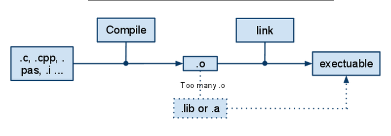

关�Makefile
昨天�到Makefile的问题。我是个程�盲，也是个linux盲，很多�懂。所以我就�集一些知识，列举如下：
1. æ£å¦‚许æ˜�彦所说：
Makefile 基本上就是ã€�ç›®æ ‡ã€�(target), ã€�å…³è¿�ã€�(dependencies) å’Œã€�动作ã€�三者所组æˆ�的一è¿�串规则。而 make å°±ä¼šæ ¹æ�® Makefile 的规则æ�¥å†³å®šå¦‚何编译 (compile) å’Œè¿�结 (link) 程å¼�。
也就是说，拿到æº�文件，è¦�得到å�¯æ‰§è¡Œçš„文件，需è¦�ç»�过下é�¢çš„å‡ éƒ¨ï¼š

2. 上��到，如�会有很多�文件，生�很多的o文件。那么一个比较好的�法是，写一个文件告诉编译器改�么�作。
http://blog.csdn.net/wtz1985/archive/2009/02/04/3862141.aspx （CSDNçš„æ–‡ç« ç‰ˆæ�ƒå£°æ˜�：“凡本网站上所有的文å—ã€�图片和音频ã€�视频稿件，任何媒体ã€�网站或个人未ç»�本网站å��è®®æ�ˆæ�ƒä¸�得转载ã€�链æ�¥ã€�转贴或以其他方å¼�å¤�制å�‘表，如有需è¦�，请ä¸�本网站è�”系相关事宜。è¿�者本网站将追究其法律责任。â€�呃，ä¸�知é�“我引用这å�¥è¯�是ä¸�是也è¿�å��规定了……OTL）所以我ä¸�åŠ é“¾æ�¥äº†ï¼Œä¹Ÿä¸�引用了。
é‚£ç¯‡æ–‡ç« é‡Œçš„å†…å®¹ï¼Œæ€»ç»“èµ·æ�¥ï¼ŒåŸºæœ¬ä¸Šæ˜¯
1. �以把命令写在这个文件里�，写的时候，�以使用事先定义（定义��，类似�定义�）的方��方便阅读和更改。
2. å�„ç§�文件比较多，å�¯èƒ½æœ‰äº›ä¾�赖关系，需è¦�指定的è¯�，使用 “example.o: 1.cpp 1.h 0.h”。æ„�æ€�是说，冒å�·å·¦è¾¹çš„ç›®æ ‡æ–‡ä»¶ä¾�èµ–äº�å�³è¾¹çš„这些文件。这一å�¥å†™å®Œäº†ä¹‹å��，那么下é�¢çš„è·Ÿ
3. 关�����的知识：
$^ 我们上é�¢ä¸�是指定了一些ä¾�赖关系么，那么这些ä¾�赖关系æ€�么起作用呢？这个符å�·å°±æ˜¯ç”¨æ�¥ä»£æŒ‡åˆ°è¿™ä¸ªç¬¦å�·æ‰€åœ¨ä½�置为æ¢ï¼Œå½“å‰�的所有指定的ä¾�赖关系ä¸çš„æ‰€æœ‰çš„ç›®æ ‡æ–‡ä»¶ã€‚
$< 当目å‰�ä½�置指定的ä¾�赖关系ä¸çš„第一个对象.
$@ 当å‰�ç›®æ ‡å¯¹è±¡.
举一个ä¸�用ä¾�赖关系的粒å�说：
bin/cmb: $(MATHOBJECTFILES) $(ANISOTROPY)/driver.cc
$(CXX) $(FLAGS) $(INC) $(MATHOBJECTFILES) $(ANISOTROPY)/driver.cc $(LIB) -o bin/cmb
这个里�的��是：
第一行：那些source生�executable的文件放在bin/cmb。
第二行：使用定义的CXX æ�¥å®Œæˆ�这项任务。用到å‰�é�¢å®šä¹‰çš„INC，我们这里å‰�é�¢å®šä¹‰çš„是些include的文件，然å��æŠŠé‚£å‡ ä¸ªsource文件编译æˆ�object放在bin/cmb下é�¢ã€‚
在真 OOæ— å�Œçš„http://www.cnblogs.com/oomusou/archive/2006/11/29/575838.htmlè¿™ç¯‡æ–‡ç« ä¸ï¼Œç»™å‡ºäº†ä¸€ä¸ªæ ‡å‡†çš„c++çš„makefile的写法：
一个很典å�‹çš„Linux C/C++çš„makefile写法，其它的应用å�¯æ ¹æ�®æ¤template修改。
(注æ„�æ¯�一行的å‰�é�¢è‹¥æœ‰ç©ºæ ¼ï¼Œæ˜¯tab，ä¸�是space)
#Source file
SRC = ThreadQueue.cpp
#Object file
OBJ = $(SRC:.cpp=.o)#Output execution file
PROGRAM = ThreadQueue#Compiler
CC = g++#Include
INCLUDE = -I/usr/include/ncurses -I/usr/include/
#Linker Parameter
LINKPARAM = -lpthread -lncurses
#Options for development#CFLAGS = -ansi -g -Wall
#Options for releaseCFLAGS = -ansi -O -Wall
all: $(PROGRAM)
$(PROGRAM): $(OBJ)
$(CC) -o $(PROGRAM) $(LINKPARAM) $(OBJ)
.SUFFIXES : .cpp
.cpp.o:
$(CC) $(INCLUDE) $(CFLAGS) -c $< 42
clean:
-rm *.o
最å��，http://hi.baidu.com/yanweinet/blog/item/24de5b1ff3a51bcba6866967.html有一个unix的例å�：
作为Linux或Unix下的程åº�å¼€å�‘人员，大家一定都é�‡åˆ°è¿‡Makefile，用make命令æ�¥ç¼–译自己写的程åº�ç¡®å®�是很方便。一般开å�‘情况下，大家都是手工写一个简å�•Makefile。下é�¢å…ˆç»™ä¸€ä¸ªæœ€ç®€å�•çš„示例代ç �：
#makefile示例
object= main.o function.ochange:$(object)
cc -o change $(object)
mv change $(HOME)/bin
main.o:
cc -c main.c -I$(HOME)/program/date/include
function.o:
cc -c function.c -I$(HOME)/program/date/includeclean:
rm change $(object)
说�：
这里是使用unix下的CC编译器，当然也能��gcc
最�生�的�执行文件�：change
�程�文件：main.c function.c
.h文件（头文件）所在目录:$(HOME)/program/date/include
ä¸é—´ç›®æ ‡æ–‡ä»¶å��：main.o function.o
当在shallä¸æ‰§è¡Œå‘½ä»¤ï¼š
make clean
将会执行
rm change $(object)
åˆ é™¤æ–‡ä»¶: change main.o function.o
è¯å�¥ï¼š
mv change $(HOME)/bin
将最终生�的�执行文件移动到
$(HOME)/bin
这一æ¥å�¯ä»¥ä¸�è¦�ï¼Œä½†è¿™æ ·ç¬¦å�ˆç›®å½•ç®¡ç�†è§„范，而且$(HOME)/bin一般在ç�¯å¢ƒå�˜é‡�PATHä¸æœ‰è®¾ç½®ï¼Œè¿™æ ·å�¯ä»¥åœ¨ä»»æ„�目录下时也能è¿�è¡Œå�¯æ‰§è¡Œæ–‡ä»¶ã€‚注æ„�：
makefile编辑时å�¦èµ·ä¸€è¡Œï¼Œæ³¨æ„�ä¸�èƒ½ç”¨ç©ºæ ¼ï¼Œè¦�用TAB键，å�¦åˆ™ä¼šæŠ¥é”™
makefile里�的注释用#,其它都会报错Makefile简�介�
Makefile是用äº�自动编译和链æ�¥çš„，一个工程有很多文件组æˆ�，æ¯�一个文件的改å�˜éƒ½ä¼šå¯¼è‡´å·¥ç¨‹çš„é‡�新链æ�¥ï¼Œä½†æ˜¯ä¸�是所有的文件都需è¦�é‡�新编译，Makefileä¸çºªå½•æœ‰æ–‡ä»¶çš„ä¿¡æ�¯ï¼Œåœ¨make时会决定在链æ�¥çš„时候需è¦�é‡�新编译哪些文件。
Makefile的宗旨就是：让编译器知��编译一个文件需��赖其他的哪些文件。当那些�赖文件有了改�，编译器会自动的��最终的生�文件已�过时，而�新编译相应的模�。
è¿™ç¯‡æ–‡ç« ä¸ï¼Œæ¯”较有å�¯å�‘性的是：
I是include文件。
make会决定那些需��新编译。
还有一个http://my.oschina.net/alphajay/blog/10225
写一个完整的makefileæ¥éª¤å¦‚下：
1 定义�执行文件的�称
TARGET = MyPro
2 指定æ¤ç¼–译工程所è¦�使用的头文件所在的目录
INC = -I. -Iheader1 -Iheader2
3 指定cpp文件所在的目录
VPATH = .:src1:src2
4 指定所有的cpp文件
SRC_PATH = $(foreach dir,$(subst :, ,$(VPATH)),$(wildcard $(dir)/,*.cpp))
解释：
foreach，subst，wildcard为makefile的内置函数，其ä¸wildcard函数为å—符串è¿�æ�¥å‡½æ•°ï¼ŒæŠŠå‡½æ•°ä¸çš„两个å�‚æ•°è¿�æ�¥æˆ�一个。subst是å—符串替æ�¢å‡½æ•°ï¼Œåœ¨æ¤å�¥ä¸æ„�æ€�是把VPATHå�˜é‡�ä¸çš„冒å�·æ›¿æ�¢æˆ�ç©ºæ ¼ã€‚foreach函数，就是把subst函数的返å›�å€¼ï¼Œä»¥ç©ºæ ¼ä¸ºåˆ†éš”ç¬¦ï¼Œå¾ªç�¯å�–值赋给dir，然å��æ�¥å�—wildcard的处ç�†ã€‚
è¿™å�¥çš„总体æ„�æ€�是：ä»�VPATHä¸è�·å�–æ¯�个目录，并分别找出æ¤ç›®å½•ä¸‹æ‰€æœ‰çš„cpp文件，赋给SRC_PATHå�˜é‡�。
5 定义ä¸é—´object文件å˜æ”¾çš„目录。
OBJ_DIR = ./obj
6 所有的object文件è¦�按照和æº�代ç �对应的目录å˜æ”¾ï¼Œå®šä¹‰object文件的目录
OBJ_PATH = $(addprefix $(OBJ_DIR)/, $(subst :, ,$(VPATH) ) )
解释：
addprefixå‡½æ•°æ˜¯åŠ å‰�缀的函数，è¯�å�¥ä¸æ˜¯ç»™VPATHä¸æ‰€æœ‰å·²ç»�å®šä¹‰çš„ç›®å½•åŠ ä¸Š./obj/çš„å‰�缀。
7 定义è¿�æ�¥æˆ�ç›®æ ‡æ–‡ä»¶æ‰€éœ€è¦�的所有的object文件的å��称
OBJS = $(addprefix $(OBJ_DIR),$(subst .cpp,.o,$(SRC_PATH)))
8 创建一个object文件的目录
MAKE_OBJECT_DIR := $(shell mkdir -p $(OBJ_DIR) $(OBJ_PATH))
*************************
9 定义�用的编译器
CXX = g++
CXXFLAGS = -g
10 å®šä¹‰ç›®æ ‡æ–‡ä»¶çš„ç”Ÿæˆ�规则
$(TARGET) ： $(OBJS)
$(CXX) -o $@ $(OBJS) $(INC) $(CXXFLAGS)
11 定义object文件的生�方�：
$(OBJ_DIR)/%.o : %.cpp %.cpp.d
$(CXX) -o $@ -c $< $(INC) $(CXXFLAGS)
12 定义.cpp.d文件的生�方�
DEPS = $(OBJS:.o=.cpp.d)
$(DEPS) : $(OBJ_DIR)/%.cpp.d ： %.cpp
$(CXX) $< -MM $(INC) > $(OBJ_DIR)/$< .d
13 定义清�函数
clean:
@rm -rf ./obj
@rm -rf $(TARGET)
至æ¤ï¼Œä¸€ä¸ªé€šç”¨çš„makefile完æˆ�了，如æ�œå¢�åŠ æº�代ç �目录和头文件目录，å�ªéœ€è¦�在INCå�˜é‡�å’ŒVPATHå�˜é‡�å¤„åŠ ä¸Šæ¤ç›®å½•å�³å�¯ã€‚ä¸é—´object文件和文件的ä¾�赖关系自动生æˆ�。
感言：
æˆ‘æ˜¯ç›—çªƒçŸ¥è¯†çš„â€¦â€¦è¿™ç¯‡æ–‡ç« å°±æ˜¯æ‹¼å‡‘åˆ—ä¸¾äº†äººå®¶çš„æ–‡ç« è€Œå·²~

{kind=link}
真巧……今天还在看，�么写fortran的makefile�
呵呵，我昨天拿到一个程�，用到这个，今天�看看相关的东西�